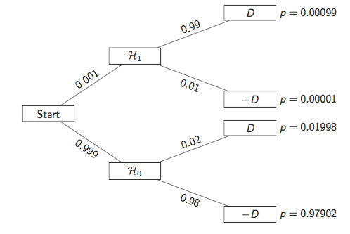
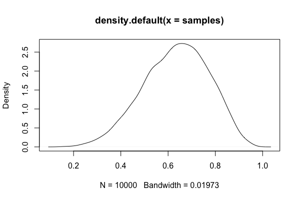

Week 8 lecture notes - PSYC 5316
Introduction to Bayesian inference
Bayesian modeling represents a fundamentally different approach to inference. Mathematically, it is based on something called Bayes' Theorem. Today we will illustrate how Bayes Theorem relates to things we actually care about (probabilities!), and then we will begin using these concepts to construct data models to use for inference.
Logic of hypothesis testing
Suppose you have a treatment that you suspect may alter performance on a certain task. You nd that the experimental group signi cantly outperforms the control group, \(t(18) = 2.7\), \(p = 0.01\).
How many of the following are True statements?
- The probability that the null hypothesis is true is 1%
- The probability that the research hypothesis is true is 99%
- If you reject the null, the probability that you are making the wrong decision is 1%
- If you repeated the experiment over and over, then you would get a significant result 99% of the time.
Turns out they're all false! So what does \(p=0.01\) mean, anyway?
Recall that the p-value is the probability of obtaining a test statistic at least as extreme as the one that was observed, given that the null hypothesis is true.
In symbols, this can be written \(P(D\mid \mathcal{H}_0)\)
Thus, the core logic of frequentist hypothesis testing is:
- suppose the opposite of what you want
- show that this hypothesis is very unlikelly (i.e., low \(p\)-value)
This is similar to the modus tollens syllogism from formal logic:
- Premise: If A, then B;
- Premise: not B;
- Conclusion: therefore, not A
Example:
- If Kelsey is happy, then she is smiling
- Kelsey is not smiling.
- Therefore, Kelsey is not happy.
This maps onto hypothesis testing in the following way (this is called Fisher's disjunction):
- If \(\mathcal{H}_0\), then we shouldn't observe \(D\)
- we observed \(D\)
- therefore, not \(\mathcal{H}_0\)
However, hypothesis testing uses a probabilistic version of this:
- If \(\mathcal{H}_0\), then observing \(D\) is very unlikely
- we observed \(D\)
- therefore, \(\mathcal{H}_0\) is very unlikely
The problem is that this is not a logically valid argument!
Example:
- If an individual is a man, then he is unlikely to be Pope
- Francis is the pope
- therefore, Francis is probably not a man
Bayes' Theorem
The previous discussion leaves us with the following question:
- If \(p(D\mid \mathcal{H}_0)\) is small,
- and we observe \(D\)
- what can we logically say about \(p(\mathcal{H}_0\mid D)\)?
The answer comes from something called Bayes' Theorem:
\[ p(\mathcal{H}_0\mid D) = \frac{p(D\mid \mathcal{H}_0) \cdot p(\mathcal{H}_0)}{p(D)} \]
We usually remember Bayes' theorem using the following words:
\[ \text{posterior} = \frac{\text{likelihood} \times \text{prior}}{\text{average likelihood}} \]
Since the denominator is just a scaling factor (to make it all sum to 1; that is, an actual probability function), we usually just remember the following:
\[ \text{posterior} \propto \text{likelihood}\times \text{prior} \]
An example from Harry Potter
At Hogwarts, Professor Pomona Sprout leads the Herbology Department. In the Department’s greenhouses, she cultivates crops of a magical plant called green codacle – a flowering plant that when consumed causes a witch or wizard to feel euphoric and relaxed. Professor Sybill Trelawney, the Professor of Divination, is an avid user of green codacle and frequently visits Professor Sprout’s laboratory to sample the latest harvest.
However, it has turned out that one in a thousand codacle plants is a afflicted with a mutation that changes its effects – consuming one of those rare plants causes unpleasant side effects, such as paranoia, anxiety, and spontaneous levitation.
In order to evaluate the quality of her crops, Professor Sprout has developed a mutation-detecting spell. The new spell has a 99% chance to accurately detect an existing mutation, but also has a 2% chance to falsely indicate that a healthy plant is a mutant.
When Professor Sprout presents her results at a School colloquium, Trelawney, trying to discern how much trust to put in Sprout’s spell, asks "What is the probability that a codacle plant is a mutant, when your spell says that it is?"
Let's think about what we know:
- Professor Sprout’s mutation spell has a 99% chance of correctly detecting that a given codacle plant is a mutant
- There is a 2% chance that the spell will falsely indicate that a healthy plant is a mutant.
- Mutations occur at a rate of 1 in a 1000
Let's also define some notation to make our lives a bit easier:
- \(\mathcal{H}_0\): the hypothesis that the plant is NOT a mutant
- \(\mathcal{H}_1\): the hypothesis that the plant IS a mutant
- \(D\): an observation (data) that Sprout's spell detects "mutant"
- \(-D\): an observation (data) that Sprout's spell detects "not mutant"

Based on this tree, we can compute:
\begin{align*} p(\mathcal{H_1}\mid D) & = \frac{p(D\mid \mathcal{H}_1)\cdot p(\mathcal{H}_1)}{p(D)}\\ &= \frac{0.99\cdot 0.001}{0.00099+0.01998}\\ &= 0.047 \end{align*}Thus, even with VERY high accuracy, the very low prior probability of being a mutant makes it so that our posterior probability is only 4.7%
Building Bayesian models
Bayesian modeling uses the basic vocabulary of Bayes theorem. Our goal is to quantify our posterior beliefs in a model. We do this by updating our prior beliefs via Bayes theorem…that is, posterior = prior x likelihood.
Let's revisit the "globe tossing" example from the first exam.
Suppose you have a globe that represents the Earth. You would like to estimate how much of the surface is covered in water. To measure this, you adopt the following strategy: toss the globe up in the air. When you catch it, you will record whether the surface under your right index finger is water or land. Then you toss the globe up in the air again and repeat the procedure. The first nine samples generate the following sequence:
W L W W W L W L W
where W indicates water and L indicates land. So in this example you observe six W (water) observations and three L (land) observations. Call this sequence of observations the data.
To construct a model, we need to make assumptions. Designing a simple Bayesian model uses a design loop with three steps.
- Data story: Motivate the model by narrating how the data might arise.
- Update: Educate your model by feeding it the data.
- Evaluate: All statistical models require supervision, leading possibly to model revision. We'll talk about this later.
The data story
The "data story" amounts to explaining how each piece of data is born. This usually means describing aspects of the underlying reality as well as the sampling process. The data story in this case is simply a restatement of the sampling process:
- Assume the true proportion of water covering the globe is p.
- A single toss of the globe has a probability p of producing a water (W) observation. It has a probability 1 − p of producing a land (L) observation.
- Each toss of the globe is independent of the others.
This is usually translated into a probability statement, called a likelihood. Based on the story, we can use a binomial likelihood to model the data generation.
\[ f(x,N,p) = \binom{N}{x}p^{x}(1-p)^{1-x} \]
Updating

In this figure, we see how Bayesian updating works.
- start with a prior that assigns equal probability to all values of \(p\) between 0 and 1.
- after seeing the first "W", our posterior changes. Now, \(p=0\) is impossible (probability = 0), and \(p>0.5\) is much more likely than \(p<0.5\).
- after seeing the next data "L", the posterior changes again. Both \(p=0\) and \(p=1\) are impossible, with \(p=0.5\) most likely (which makes sense, since out of TWO tosses, we've seen one W and one L).
- after seeing the next data "W", the posterior again shifts toward \(p=1\), but note that \(p=1\) is still impossible.
- each observation of "W" shifts the peak toward the right \(p=1\), while each observation of "L" shifts the peak toward the left.
From this, we can think of a Bayesian model as a machine that:
- starts with a prior belief
- takes in some data
- updates the prior belief to a posterior belief.
Thus, all Bayesian models require a prior in order to function!
Role of the prior?
This is where Bayesian modeling gets its most criticism. In theory, you can use ANY prior you want. Ideally, the prior you use should reflect your prior state of knowledge about the model.
To see how the choice of prior can affect your posterior, consider the diagram below:

In the first row, we use a uniform prior. That is, each value of \(p\) is equally likely. When we multiply the prior by the likelihood, the resulting posterior looks the same as the likelihood.
In the second row, we use a different kind of prior. Here, our prior belief is that \(p\) MUST be larger than 0.5. When multiplying by the likelihood, our resulting posterior belief still reflects this. Notice that the posterior probability is still 0 for any \(p<0.5\)
Finally, in the third row, the peaked prior shifts and distorts the posterior (relative to the original likelihood).
Computations with Bayesian models
So far, we have concentrated on the conceptual side of Bayesian modeling. That is, we've talked about what Bayesian models do (build posterior distributions based on priors and data). We haven't actually talked about HOW to do these computations. That's where we'll go next.
The mathematics behind Bayesian computation can get pretty complex. Any course in mathematical statistics that does Bayesian computation will require knowledge of the integral calculus.
Fortunately, we now have modern computing methods that can do really good approximations for us. As a first encounter, we'll talk about grid approximation today.
Grid approximation
Grid approximation works on the basis of dividing the "parameter space" (that is, all the values of \(p\) we could consider) into a finite set of points. Then, we can define our prior and likelihood on this finite set of points, after which the posterior can be computed using simple arithmetic.
Here's how it works:
- Define the grid. This means you decide how many points to use in estimating the posterior, and then you make a list of the parameter values on the grid.
- Compute the value of the prior at each parameter value on the grid.
- Compute the likelihood at each parameter value.
- Multiplying the prior by the likelihood. This gives you the unstandardized posterior at each parameter value on the grid
- Finally, standardize the posterior (that is, turn it into a probability function). This is done by dividing each value by the sum of all values.
For our globe tossing example, the following code will accomplish each of these steps:
p_grid = seq(from=0, to=1, length.out=20) prior = rep(1, 20) likelihood = dbinom(x=6, size=9, prob=p_grid) posterior = likelihood * prior posterior = posterior/sum(posterior)
We can plot the resulting posterior distribution as follows:
plot(p_grid, posterior, type="b")

As an exercise, you should try using sparser grids (i.e., less than 20 points) and denser grids (i.e., more than 20 points). What happens to your plot of the posterior?
Also, we can investigate the different priors we used earlier. Re-run the code chunks above with the following definitions for prior:
prior = ifelse(p_grid < 0.5, 0, 1) prior = exp(-5*abs(p_grid - 0.5))
Using sampling to approximate posterior
The methods we'll use this semester rely on sampling from the posterior. The idea is that once the model is built, we can do computations with the posterior by pulling LOTs of samples, and then using those samples to answer questions.
To see how this works, we'll illustrate with our globe tossing model.
Let's start with a fairly dense grid approximation:
p_grid = seq(from=0, to=1, length.out=1000) prior = rep(1, 1000) likelihood = dbinom(x=6, size=9, prob=p_grid) posterior = likelihood * prior posterior = posterior/sum(posterior)
The following code will pull 10,000 samples from the posterior distribution:
samples = sample(p_grid, prob=posterior, size=10000, replace=TRUE)
We can see those samples here:
plot(samples)

We can also plot the density of those samples. Notice how closely it resembles our posterior plots from above.
plot(density(samples))
